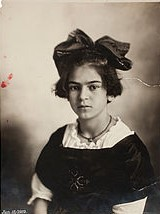

(Coyoacán, Ciudad de México, 6 de julio de 1907-Coyoacán, Ciudad de México, 13 de julio de 1954),1 conocida como Frida Kahlo , fue una pintora mexicana.
Su obra gira temáticamente en torno a su biografía y a su propio sufrimiento. Fue autora de 150 obras, principalmente autorretratos, en los que proyectó sus dificultades por sobrevivir. También es considerada como un icono pop de la cultura de México.
Frida fue la tercera hija del fotógrafo Guillermo Kahlo, inmigrante alemán nacionalizado mexicano, y de Matilde Calderón, mexicana.14Sus dos hermanas mayores fueron Matilde (nacida en 1899) y Adriana (nacida en 1902); después de ellas nació su único hermano, Guillermo (nacido en 1906 y que sobrevivió solo unos días).
La evidente limitación motriz, así como las constantes operaciones quirúrgicas y tratamientos médicos hicieron que Kahlo se desarrollara de modo diferente y con frecuencia se viera impedida de participar con otros niños.
